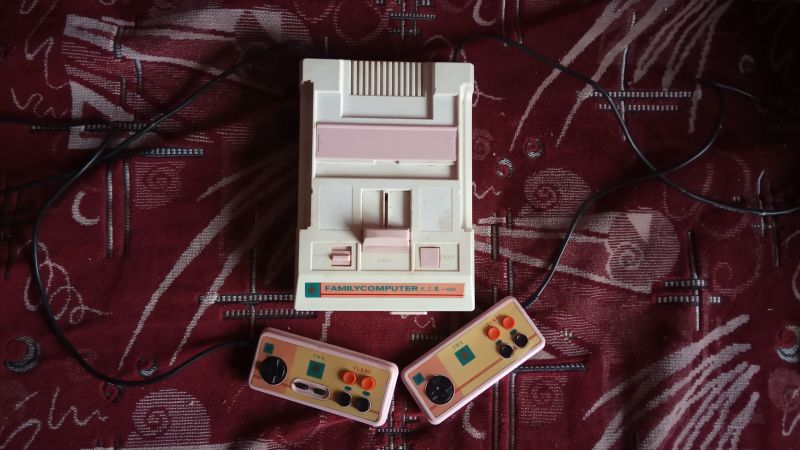

| Произведён | Не раньше декабря 1992-января 1993 |
| Процессор | GM-6827( PAL аналог MOS-6502 ) |
| Зеленит | Нет |
| Встроенные игры | Нет |
| Количество слотов для картриджей | 1 |
| Стандарт картриджа | Японский Famicom 60 пинов |
| Звуковой процессор | Нормальный |
| Количество пинов геймпадов | Оба |
| АВ-выход | Слоты есть, по факту не распаян |
| Антенный выход | Работает |
Family Computer 天王星-601
Family Computer 天王星-601 или же Уран-601 - клон Nintendo Famicom, исполненный в оригинальном корпусе с изменённой расцветкой. Судя по логотипу на консоли и контроллерах произведён той же самой компанией, что произвела клоны UFO - город Шеньжень компания Баоан Кеченг Электроникс Ко.
Комплектация данного клона фактически состоит только из самой консоли с двумя контроллерами.
Если о консоли Уран-5000 информации было мало, но это компенсировалось информацией на коробке и распространённостью консоли среди жителей России, то об этой консоли информация ещё более туманна.
Доподлинно можно утверждать о её происхождении - КНР, город Шеньжень, однако информации или каких-либо фотографий в интернете до момента покупки найти не представлялось возможным, что говорит о том, что эта модель приставки была гораздо более редка, нежели модель Уран-5000.
Эта приставка использует оригинальный дизайн консоли Famicom, однако же использует розового цвета шторку для слота картриджей, рычаг и кнопки питания и сброса.
Консоль исполнена практически полностью на микросхемах - вся внутренняя начинка этой консоли использует полноценную мелкую логику, вместо БМК.
Что точно подтверждает её родство с UFO-5000 помимо логотипа, так это тот факт, что внутренняя плата, а также номера микросхем и расположение деталей полностью идентично данной консоли, с той лишь разницей, что микросхемы на данной консоли датированны более ранними числами, также как и номер модели, что говорит о том, что перед нами более ранний клон от той же самой фирмы.
Разница только в том, что на UFO-Уране слоты для геймпадов выведены наружу, а в данном случае аналогично Famicom контроллеры встроены в саму консоль.
Консоль использует следующие микросхемы:
GM-6827 - Центральный процессор неизвестной фирмы изготовителя( имеет логотип в виде буквы G похожую по форме на планету Сатурн ) с припиской JBDC, что это могло бы обозначать - не знаю.
GM-6838 - Видеопроцессор аналогичной фирмы с такой же припиской
Может быть обе эти микросхемы от фирмы GoldStar
Оперативная память представлена двумя микросхемами фирмы Goldstar - GM76C28A
Также имеется микросхема от фирмы Motorola - SN74LS139N - вероятно микросхема логики
А также микросхемы с логотипами, к сожалению происхождения которых я не знаю
Консоль аналогично Урану-5000 не имеет AV-выхода, он есть только как для вида, а по факту нераспаянный пшик. Консоль работает только по RF-антенному входу.
Блок питания используется стандартный.
Имеются два встроенных геймпада с турбокнопками, на втором по стандарту нет двух кнопок - Селект и Старт.
Но даже здесь вышла неприятная история, проверить приставку полноценно нет возможности, поскольку несмотря на то, что она совершенно спокойно запускается - на геймпадах используются микросхемы под смолой которые скорее всего неисправны, т.к. приставка не реагирует на нажатия клавиш, притом что ток с платы идёт.
Скорее всего будет отправлена на ремонт или же придется подумать о том, чтобы приделать к приставке аналогичный геймпад. Время покажет.
Однако как музейный экспонат несомненно интересен, поскольку представляет из себя UFO в более раннем представлении.